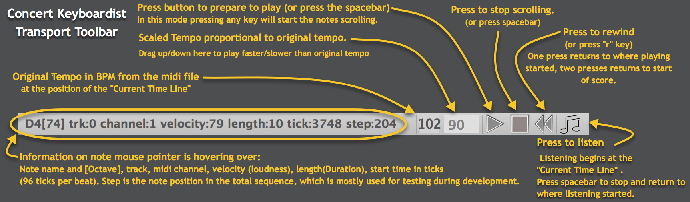
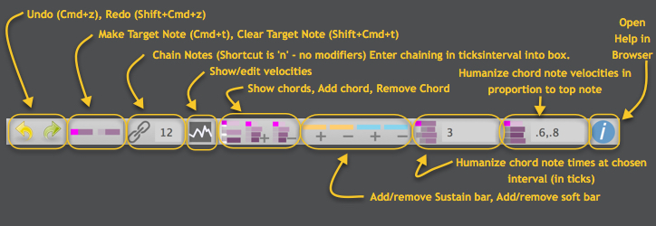

Concert Keyboardist User's Manual
Version and Licensing
- Document Version: September 1, 2017 for Concert Keyboardist Alpha
- Concert Keyboardist Licensing: Licenses and Copyrights
For questions or comments contact: chrisgr99@gmail.com
Quick Introduction to Concert Keyboardist
Concert Keyboardist lets you perform music from a midi file. It always plays the correct notes, no matter what keys you play. Each time you press a key on your computer keyboard or an attached midi keyboard, Concert Keyboardist plays the next "Target Note" in the score. It also autoplays any notes "Chained" off this target note. When it reaches the next Target Note it waits for you to press another key. It's up to you to trigger the target notes at times that sound good to you, just like playing them on a real keyboard.
While playing, notes scroll right-to-left. You choose when to play them and how long to hold them. On an attached velocity-sensitive midi keyboard note velocity (loudness) is controlled by how hard you press the keys. If you are playing on a computer keyboard (not velocity sensitive) Concert Keyboardist uses the note velocities from the score.
You can also edit loaded midi files to make them playable according to your preferences, and you can save the settings with the file.
Installation
Concert Keyboardist is compatible with Mac OS 10.6 or higher. To install:
- Copy the Concert keyboardist application to your Applications folder.
- Copy the included folder of example files to anywhere you choose. Possibly your Desktop, Documents folder, or a folder where you keep midi files.
- Concert keyboardist currently does not make sound of its own. It sends midi messages and you need to route theme to a software synthesizer (or hardware synthesizer). The easiest option on a Macintosh is to use GarageBand which is free and has a wide range of sounds to choose from. Also GarageBand automatically received midi message from all output ports on you system so it automatically receives from the Concert Keyboardist default output.
- Setup with GarageBand:
- Download and install GarageBand (it's free to Mac owners).
- Open GarageBand.
- When it opens choose "Empty Project"
- Choose "Software Instrument". It should default to Classic Electric Piano.
- You could play the Classic Electric Piano but it's better to use a true piano sound for the piano music included with Concert Keyboardist.
- To choose a piano sound click on "Sounds" in the frame on the left, click on "Piano" and double click on "Steinway Grand Piano".
- Switch to Concert Keyboardist and follow the Quick Start to Playing, below. When you play you should hear piano notes.
- If you are more experienced with midi you should know how to configure your preferred sound generator to receive from the Concert Keyboardist default output.
- If you have a midi keyboard attached to your computer you can configure Concert Keyboardist to receive from it. Use the "Audio and Midi Settings" command in the File menu to open the settings dialog. Click next to your midi controller to make it active and close the dialog. Concert Keyboardist will remember this setting between sessions and it will remain available as long as your controller is active when Concert Keyboardist is started.
Main Window
- Concert Keyboardist is like a "player piano" with the notes shown as horizontal bars. A note's vertical position shows pitch and its left end shows start time. Its length shows duration. These times taken from the midi file are guides to playing the notes.
- While you play you control actual note start times and durations in real time. This is like playing sheet music. The notes are there but you add expression as you play. You can also control note velocities if you have a velocity sensitive keyboard attached to your computer.
- The score can be scrolled left or right with the mouse wheel or two finger drag on a touch pad. The end of the score is at the far right.
- The blue vertical line is the "Current Time Line" (CTL) which indicates the current playing time in the score. It turns amber when ready to play and green while you are playing.
- While you are playing, pressing any key instantly triggers the next magena-headed-note to the right of the Current Time Line. The magenta notes are Target Notes, the ones that you directly play.
- When a Target Note is played it also schedules for playing all notes chained from it, up to just before the next target note. Chained notes are those without magenta heads.
- Chained notes are triggered at appropriate times in the future based on the current tempo.
- After all scheduled chained notes have been played no further notes will sound until you trigger the next target note.
- Although a target note's position suggests its start time, you can play it before or after that time, giving you control over the flow and rhythm of the music. The tempo also adjusts to your playing speed. If you continually play notes before their scheduled time the tempo speeds up and if you play notes behind the tempo slows.
Quick Start to Playing
- Load a file: You can use the File-Open menu, the toolbar button, or Cmd+O. A good introductory example is "Minuet in G[ck].mid" which is included with Concert Keyboardist. It should look something like the above image.
- Prepare to play: Press the spacebar. This turns the Current Time Line orange, indicating that Concert Keyboardist is ready to play. As soon as you press a key in this mode, the first note sounds and notes start scrolling to the left according to the tempo.
- Trigger Notes: On your computer keyboard press any letter key except "r", "s" and "f", or any of the characters "[ ] ; ' < > and /". On an English language keyboard these are the rows from "q" to "]", from "a" to " ' " and from "z" to "/".
- Note Timing: Press one of these keys whenever the next target note reaches the Current Time Line. You can play with one finger, or two or more to play faster or smoother.
- Stopping Playing: Press the spacebar again, press 'r' for rewind, or roll the mouse wheel to scroll left or right.
- Yellow note heads are those that are currently sounding. As you play, notice that long notes continue sounding even as you trigger shorter simultaneous notes.
- Chords: The top notes of chords are often target notes with other possibly simultaneous chord notes chained from them. This allows chords to be triggered by one note like other chained notes. Notes of broken chords can be configured to play individually if you choose.
- Trills are also like any other chained notes. For example in bar 8 of Minuet in G the notes are chained making them easier to play. However you can configure them as individual target notes if you choose.
- Rewind: Press the 'r' key. The first time you press "r" the transport rewinds to the place you most recently started. A second press returns to the start. You can also press "r" while the transport is running to stop and transport and rewind in one step.
- Playing legato notes This is a technique where the on and off times of successive notes are overlapped resulting in smooth sounding transitions. If you play with at least two fingers you can overlap the on and off times of successive notes, playing legato as in normal piano playing.
- The Relative Time Line: This is the yellow vertical line that appears at the start of the most recently played target note. The Relative Time Line is a guide to when to play the next target note relative to when you played this note. In playing expressively you may be triggering notes before or after the Current Time Line. It's helpful to have a relative time marker showing when notes were actually played, not when they were suggested to be played. Experiment with playing notes before or after the Current Time Line to understand this better. The yellow line remains after you stop playing to mark the last note played before stopping.

Some of these commands act on "selected notes". To select some notes move the mouse pointer to anywhere not on a note bar, press the left mouse button, drag over the heads of the notes to be selected and release the mouse button. The head of each selected note will be surrounded by a white box. To clear the selection click anywhere there is not a note bar.

Menu Commands
File Menu
About... : Information about Concert Keyboardist (currently not implemented)
Open... : Open a file. Either normal midi files, extension .mid, or Concert Keyboardist files can be opened. A CK file also has an extension of .mid but has [ck] added just before the extension.
Open Recent File : The ten most recently opened files are shown.
Save : Save the current file as a CK file. If this file was opened a normal midi fileacs, is is converted to a CK file when saved. The file retains the same tracks as the original midi file but has some extra tracks containing extra information as system exclusive blocks.
Save As... : Brings up a prompt to save your work as a file with a different name.
Audio and Midi Settings... Choose the midi input and output channels. The audio settings are currently not used. On Macintosh CK also automatically creates input and output midi ports called ConcertKeyboardist that can used used by other software such as a Digital Audio Workstation (DAW or softsynth) to receive midi from Concert keyboardist.
Tracks... : Show the tracks in the score. Tracks can be marked as active or inactive. Inactive tracks are not displayed and ignored while playing. This is especially useful for multitimbral music where there are many instruments.
Edit Menu
Undo : Undo most recent command. Can be performed repeatedely to undo more than one command. Only currently works for the set and unset target note commands, and the chain command. Keyboard shorcut: Cmd+z.
Redo : Redo the most recent undone command. Can be performed repeatedely to redo more than one undone command. Keyboard shortcut: Shift+Cmd+z.
Play/Pause : Ready the score for playing, or stop it playing. The keyboard shortcut is spacebar (no modifier key).
Listen : Listen to the score starting at the note after the Current Time Line. Press the spacebar to stop. When listening is stopped the transport is returned to the place where listening started. You can use this to listen to a passage to get a feel for it before playing it yourself. Same as the Listen toolbar button. Keyboard shortcut is "=" (no modifier key).
Sequence: Not currently used
Window: Not currently used
Licenses and Copyrights
Concert Keyboardist License
Copyright (C) 2017 Christopher Graham (chrisgr99@gmail.com)
To Be Done....
THE SOFTWARE IS PROVIDED "AS IS", WITHOUT WARRANTY OF ANY KIND,
EXPRESS OR IMPLIED, INCLUDING BUT NOT LIMITED TO THE WARRANTIES OF
MERCHANTABILITY, FITNESS FOR A PARTICULAR PURPOSE AND NONINFRINGEMENT.
IN NO EVENT SHALL THE AUTHORS OR COPYRIGHT HOLDERS BE LIABLE FOR
ANY CLAIM, DAMAGES OR OTHER LIABILITY, WHETHER IN AN ACTION OF
CONTRACT, TORT OR OTHERWISE, ARISING FROM, OUT OF OR IN CONNECTION
WITH THE SOFTWARE OR THE USE OR OTHER DEALINGS IN THE SOFTWARE.